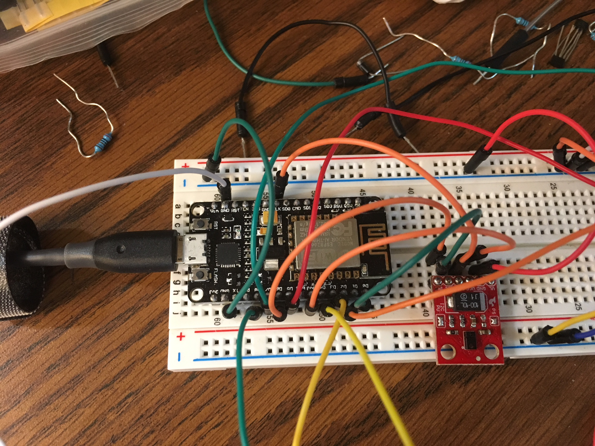
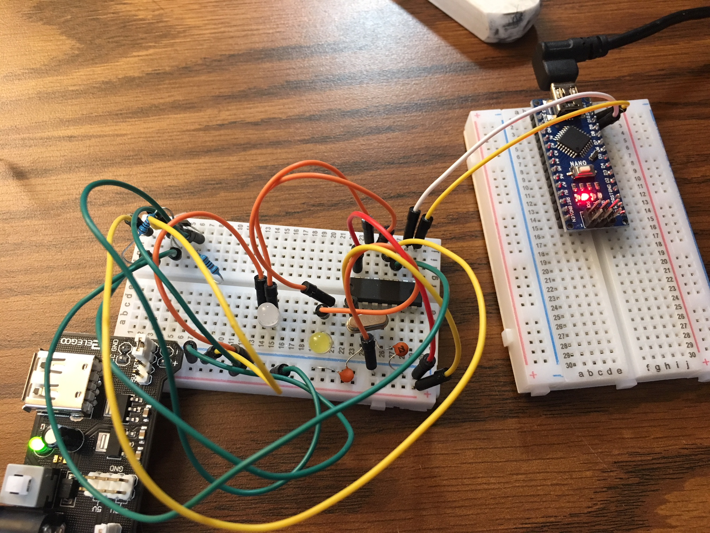
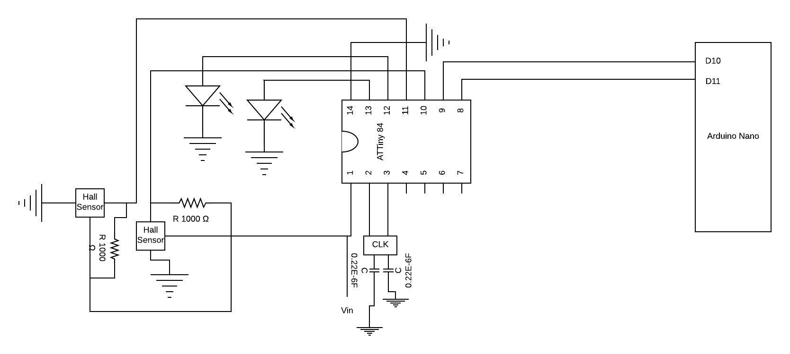
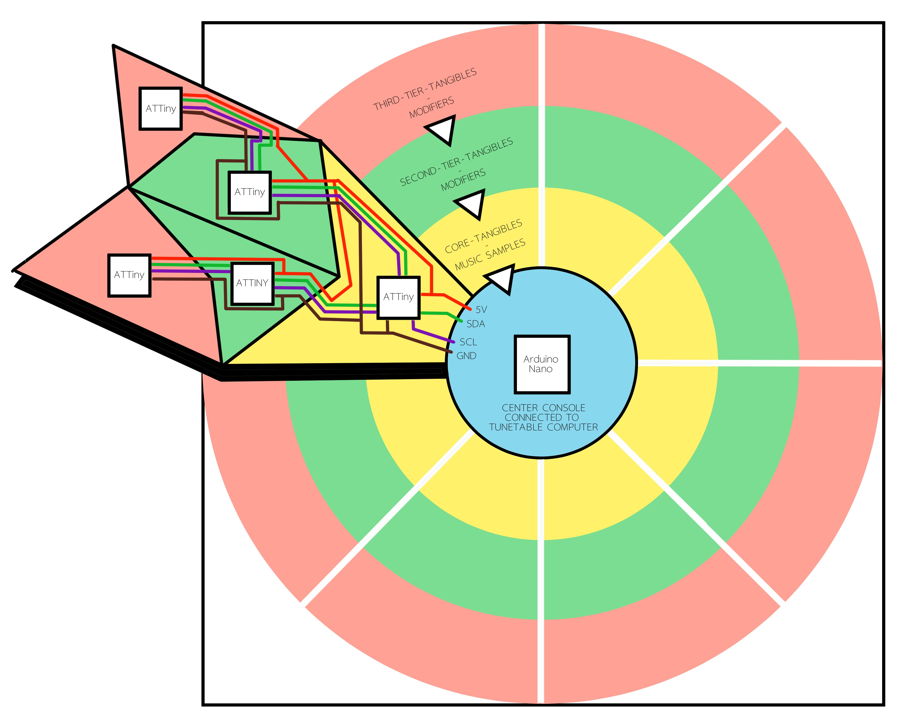
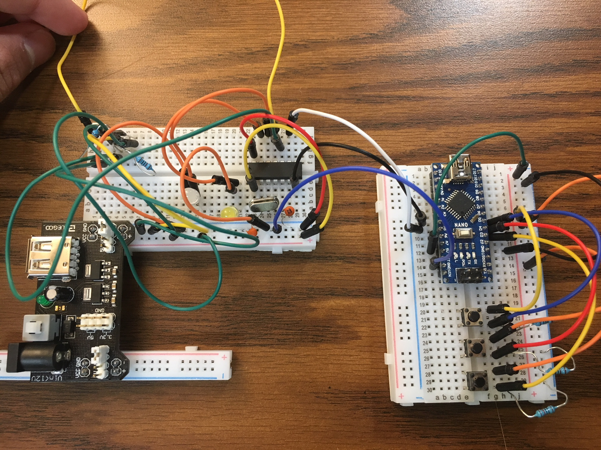
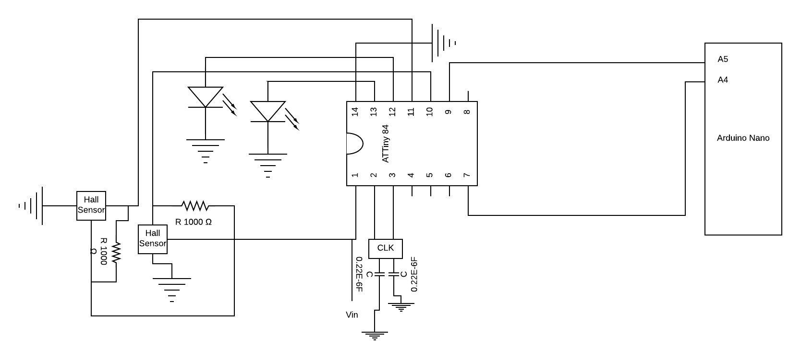

As a student researcher at Georgia Tech’s Adaptive Digital Media Lab, I worked on the TuneTable project. The TuneTable, designed to be an interactive museum installation, is a large table with graphics projected onto the surface. On the tabletop are several tangible elements that children work in groups to arrange and connect with each other. Different combinations of tangibles are detected by the table and the table plays music according to the children’s arrangements. The logic behind the arrangement of tangibles is based in computational principles, providing children an engaging introduction to computation. Some tangibles are music samples, which, when placed next to each other, play in succession, and other tangibles are modifiers, modifying the quality of the samples.
When I joined the TuneTable team, we were in the process of completely overhauling the interaction design of the table. As such, I helped brainstorm ways to improve the table’s interaction schema. Primarily, though, I was responsible for integrating various electronic functions into the tangible elements of the table. I installed wifi communication capabilities into the tangibles, along with various additional sensory inputs and a system of passive communication between tangibles to allow the tangibles to locate each other.
Task:
Parameters:
Process:
Solution:
ESP-12E connected to APDS-9960:
Code loaded onto ESP-12E to offer OSC server and client functionality:
#include //Library for the test sensor used
//Test code to send and receive messages over wifi using OSC protocol from the Esp12-e module
#include <ESP8266WiFi.h>
#include <WiFiUdp.h>
#include <OSCMessage.h>
#include <OSCBundle.h>
#include <OSCData.h>
#include <Wire.h>
int mag1 = 14;
int mag2 = 13;
int mag3 = 2;
int mag4 = 0;
int pwm = 4;
int counter = 0;
int avg = 0;
int LED_PIN = 15;
// Global Variables
SparkFun_APDS9960 apds = SparkFun_APDS9960();
uint8_t proximity_data = 0;
//Wifi setup
char ssid[] = "GTother"; // your network SSID (name)
char pass[] = "GeorgeP@1927"; // your network password
WiFiUDP Udp; // A UDP instance to let us send and receive packets over UDP
const IPAddress outIp(143, 215, 110, 250); // remote IP of your computer
//this should match the port to listen on in the python sketch
const unsigned int outPort = 9999; // remote port to receive OSC
const unsigned int localPort = 8888; // local port to listen for OSC packets (actually not used for sending)
OSCErrorCode error;
void setup() {
pinMode(LED_PIN, OUTPUT);
analogWrite(LED_PIN, 0);
Serial.begin(115200);
pinMode(mag1, INPUT);
pinMode(mag2, INPUT);
pinMode(mag3, INPUT);
pinMode(mag4, INPUT);
pinMode(pwm, INPUT);
Wire.begin(6, 5);
// Connect to WiFi network
Serial.println();
Serial.println();
Serial.print("Connecting to ");
Serial.println(ssid);
WiFi.begin(ssid, pass);
//wait until connected
while (WiFi.status() != WL_CONNECTED) {
delay(500);
Serial.print(".");
}
Serial.println("");
Serial.println("WiFi connected");
Serial.println("IP address: ");
Serial.println(WiFi.localIP());
Serial.println("Starting UDP");
Udp.begin(localPort);
Serial.print("Local port: ");
Serial.println(Udp.localPort());
//Set up gesture sensor
if ( apds.init() ) {
Serial.println(F("APDS-9960 initialization complete"));
} else {
Serial.println(F("Something went wrong during APDS-9960 init!"));
}
// Adjust the Proximity sensor gain
if ( !apds.setProximityGain(PGAIN_2X) ) {
Serial.println(F("Something went wrong trying to set PGAIN"));
}
// Start running the APDS-9960 proximity sensor (no interrupts)
if ( apds.enableProximitySensor(false) ) {
Serial.println(F("Proximity sensor is now running"));
} else {
Serial.println(F("Something went wrong during sensor init!"));
}
}
void loop() {
if ( !apds.readProximity(proximity_data) ) {
Serial.println("Error reading proximity value");
} else {
Serial.print("Proximity: ");
Serial.println(proximity_data);
}
int button_state = proximity_data / 3;
int state1 = digitalRead(mag1);
int state2 = digitalRead(mag2);
int state3 = digitalRead(mag3);
int state4 = digitalRead(mag4);
int pwmval = pulseIn(pwm, HIGH) + pulseIn(pwm, LOW);
if(counter == 10){
avg = avg/counter;
avg = 0;
counter = 0;
}
else if(counter<10){
avg = avg+pwmval;
counter = counter+1;
}
//Send and receive message functionality is below
Serial.println("sending message...");
/* This is the address of the message.
You can use this to distinguish between the
different values that you send. For example
you could have /button, /accel-x, /gyro-x, etc
for different sensors.
*/
OSCMessage msg("/value");
/* add data to the message. Any data type works.
For example, msg.add("hi"); would also work
*/
msg.add(button_state);
//send out the msg over udp
Udp.beginPacket(outIp, outPort);
msg.send(Udp);
Udp.endPacket();
msg.empty();
OSCMessage msg1;
//get the data from the network
int size = Udp.parsePacket();
//only do stuff if we actually got data
if (size > 0) {
while (size--) {
/*
if your client was sending an osc bundle
instead of a message, this line would be:
bundle.fill(Udp.read());
*/
msg1.fill(Udp.read());
}
if (!msg1.hasError()) {
/* if the bundle has a message with the
address "/led", call the function led.
If the message that the client is sending
does not have this address, the NodeMCU
wont do anything.
*/
msg1.dispatch("/led", led);
Serial.println("Message Received!");
/* If you are also sending a separate message that has
the address "/motor", you could do something
with it here.
*/
//msg1.dispatch("/motor", motor_function);
} else {
error = msg1.getError();
Serial.print("error: ");
Serial.println(error);
}
}
delay(100);
}
void led(OSCMessage &msg) {
// check if the first piece of data is an int and if so, use it
if (msg.isInt(0)) {
int ledState = msg.getInt(0);
Serial.println("LED" + ledState);
analogWrite(LED_PIN, ledState * 3);
Serial.print("/led: ");
Serial.println(ledState);
}
}
Python script on TuneTable computer to offer OSC server and client functionality:
import argparse
import math
from pythonosc import dispatcher
from pythonosc import osc_server
import random
import time
from pythonosc import osc_bundle_builder
from pythonosc import osc_message_builder
from pythonosc import udp_client
#Test code to set up a python server and client that communicates over wifi with the ESP-12e module using OSC protocol
def printButton(unused_addr, data):
print ("message received")
print("sending msg: " + str(data))
# - if you wanted to send a bundle, you could use:
# bundle = osc_bundle_builder.OscBundleBuilder(osc_bundle_builder.IMMEDIATELY)
# {build your message and add data to it like you do below}
# bundle.add_content(msg1)
# bundle.add_content(msg2)
# bundle = bundle.build()
# client.sen(bundle)
# build the msg to send to the NodeMCU. This is the address that
# the NodeMCU will be watching for
msg = osc_message_builder.OscMessageBuilder(address = "/led")
# add the data to the message
msg.add_arg(data)
msg = msg.build()
#send the message
client1.send(msg)
print("message sent");
if __name__ == "__main__":
CompIP = "143.215.110.250";#Computer IP
ESPIP = "143.215.102.99"; #ESP12e IP address - this will be printed out by the ESP12e when it initializes using the test code ESP8266ServerClient.ino
# This should match the outPort in the Arduino sketch
port = 9999 #Server port
port1 = 8888; #Client port
#server receives messages. Client (1's) send messages.
#All variables with '1' in their names refer to client functionality
parser = argparse.ArgumentParser()
parser.add_argument("--ip", default=CompIP, help="The ip to listen on")
parser.add_argument("--port", type=int, default=port,
help="The port to listen on")
args = parser.parse_args()
# set up the dispatcher to handle the osc
dispatcher = dispatcher.Dispatcher()
dispatcher.map("/value", printButton)
# Start the server to recieve osc
server = osc_server.ThreadingOSCUDPServer(
(args.ip, args.port), dispatcher)
print("Serving on {}".format(server.server_address))
parser1 = argparse.ArgumentParser()
parser1.add_argument("--ip", default=ESPIP, help="The ip of the OSC server")
parser1.add_argument("--port", type=int, default=port1, help="The port the OSC server is listening on")
args1 = parser1.parse_args()
# set up udp client
client1 = udp_client.UDPClient(args1.ip, args1.port)
server.serve_forever()
Task:
Parameters:
Process:
Serial connection between ATTiny 84 and Arduino Nano
Circuit Diagram for Serial connection
Solution:
Diagram of the tabletop, the tiers and the signals between each tangible:
Prototypical I2C connection between ATTiny 84 and Arduino Nano
Circuit Diagram for I2C connection
I2C Slave Test Code on each ATTiny 84:
//Test code for I2C slave functionality on ATTiny84
#define SLAVE_ADDR 0x8 //ATTiny's address. Must be same as address in Master Sketch
#include // Must always come after address declaration above
const int mag1 = 2;
const int mag2 = 3;
const int led1 = 0;
const int led2 = 1;
//Make sure to connect the arduino and tiny to a common ground.
//Tiny GPIO 4 to Arduino A5
//Tiny GPIO 6 to Arduino A4
void setup()
{
//Stes up Hall effect and LED's for test setup
pinMode(led1, OUTPUT);
pinMode(led2, OUTPUT);
pinMode(mag1, INPUT);
pinMode(mag2, INPUT);
TinyWireS.begin(SLAVE_ADDR);
TinyWireS.onRequest(requestEvent); //When Master requests data, call function requestEvent
}
void loop()
{
//Turns LED's on or off depending on state of hall effect sensors. Hall effect sensors are active low.
if(digitalRead(mag1) == 0){
digitalWrite(led1, HIGH);
}
else{
digitalWrite(led1, LOW);
}
if(digitalRead(mag2) == 0){
digitalWrite(led2, HIGH);
}
else{
digitalWrite(led2, LOW);
}
delay(100);
}
void requestEvent()
{
//Sends a different character to the master depending on the state of the Hall effect sensors
if(digitalRead(mag1) == 0 && digitalRead(mag2) == 0){
TinyWireS.send("1");
}
else if(digitalRead(mag1) == 0 && digitalRead(mag2) == 1){
TinyWireS.send("2");
}
else if(digitalRead(mag1) == 1 && digitalRead(mag2) == 0){
TinyWireS.send("3");
}
else{
//If no sensors are triggered, the value "4" is sent.
TinyWireS.send("4");
}
}
I2C Master Test Code on Arduino Nano:
#include
//I2C Master code on arduino nano
void setup() {
Wire.begin(); // join i2c bus (address optional for master)
Serial.begin(9600); // start serial for output
}
void loop() {
Wire.requestFrom(0X8, 1); // request 1 byte from slave device 0X8
while (Wire.available()) { // slave may send less than requested
char c = Wire.read(); // receive a byte as character
Serial.println(c); // print the character
}
delay(100);
}
© 2019 all rights reserved Mohar Kalra.